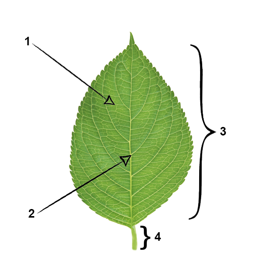

IELTS Reading - Diagram Completion
In this lesson we'll learn how to tackle diagram completion questions on IELTS Reading. In this type of questions, you’re given a descriptive text and a diagram or plan, which you have to label according to the text. Your diagram may be a technical drawing, a description of something from the natural world, a process or a plan of something.
This is how the diagram completion question may look like on IELTS Reading test:
Label the parts of a leaf on the diagram below. Choose ONE WORD from the Reading Passage for each answer. Write your answers in boxes 1-4 on your answer sheet.
Answering strategy:
- Read the text, underlining the new terms and important names.
- Look at the diagram and think which parts of it you can label.
- Check your assumptions by looking back at underlined terms and label the parts you’re sure of.
- If there are some unlabeled parts left, check the diagram for key words. Then, scan the text for the right answer.
Tips:
- Always underline new terms in the text - 99% that they will be used in the questions.
- The key words in the diagram may help you to complete it.
Example:
Label the parts of a leaf on the diagram below. Choose ONE WORD from the Reading Passage for each answer. Write your answers in boxes 1-4 on your answer sheet.
Remember this useful technique: underline new terms as you read. In this example, we've underlined all the new terms for you.
Leaves' structure
Now it's time to label the diagram:
1.
2.
3.
4.
Answers and explanations
- Arrow near the number 1 points to the little threads in the middle of the leaf. After you look at the underlined words, you’ll see what’s written in the fourth paragraph:
If you look closer at leaves, you will notice networks of thin threads. Those networks are called veins.
So the correct answer is: veins or vein. - The second arrow points to a large vein in the centre of the leaf. The last sentence of the fourth paragraph says: The main vein of a leaf, running down the centre of the leaf, is called midrib. So the correct answer is: midrib.
- The bracket near number 3 captures the main part of the leaf. The third paragraph tells us that
The blade is the broad, flat part of the leaf.
Thus, the correct answer is blade. - The fourth part you have to label is the part of the leaf that connects it to the plant’s stem. And once again, you scan the text for the underlined words and see this phrase in the last paragraph:
The area of some plants that connects the plant's stem and leaf is called the petiole.
So the correct answer is petiole.